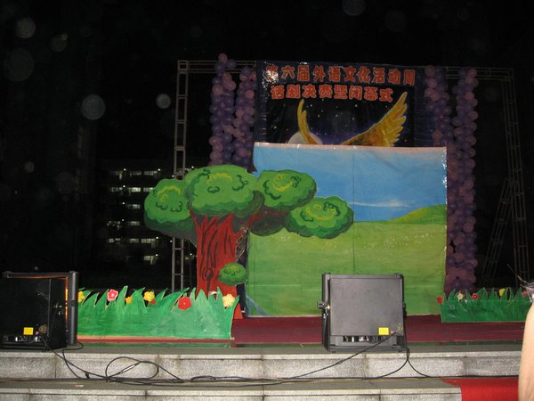
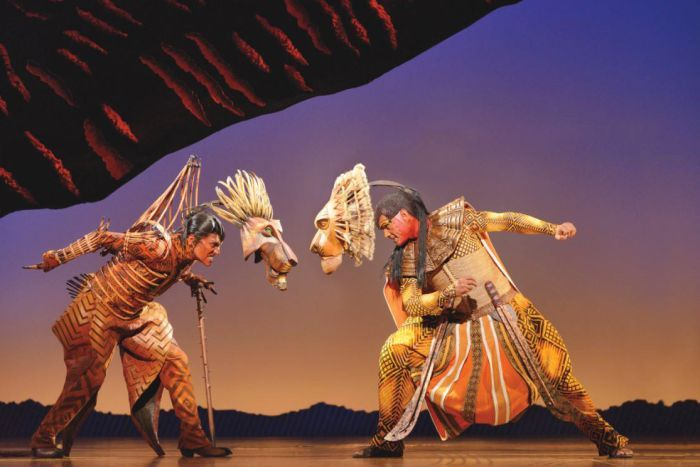
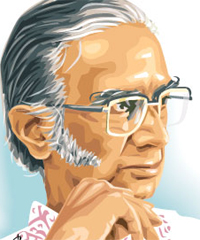

a long speech spoken by a single character to himself or herself, or to the audience.
All objects placed on the stage, pictures on walls and backdrops.

Costumes and personal accessories suggest aspects of a character’s personality.

Character movement and positions are usually only given at key points in the
narrative; such directions ensure that the characters’ words and their relationships
with others are clearly conveyed to the audience.
Theatre of Sri Lanka originated from traditional rituals and folk dramas in the 19th century
Until that period, the art was confined to small villages and didn't have a national presence.
Influential dramatist Ediriweera Sarachchandra attributes this to the influence of Theravada Buddhism, which he believes to have "tended more toward solitary contemplation and the attainment of insight than towards congregational practices or participation in community life."

Dramas in Sri Lanka began first with ritualist performances of early polytheistic religions. Originating as masked dances intersnouring gods and ridding demons, these gradually became free of religion and organised forms of entertainment.
It would take until the 1950s for serious Sinhala dramas to develop. With independence of Ceylon from Great Britain and a widespread appreciation of Sinhala culture, Ediriweera Sarachchandra led the movement for serious Sinhala theatre.
 Click here for more
Click here for more